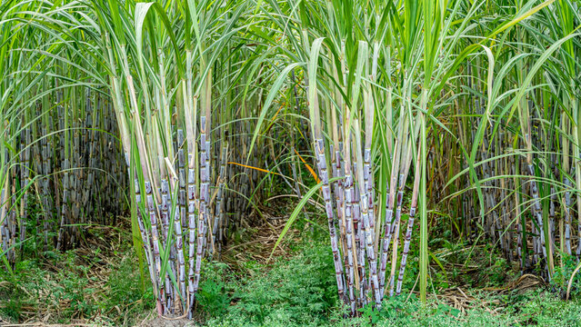

1. TEA / 1. चाय

Tea in Assam is typically grown in the two main seasons—first flush during March to May and second flush
from June to September.
Assam dominates India's tea production and market share, with the majority of its tea sold locally and
in international markets.
Assam tea thrives in well-drained, loamy soils with high acidity, such as those found in the Brahmaputra
Valley.
Tea plants take 3-4 years to mature, and resources include labor for plucking, suitable machinery, and
regular maintenance.
Besides Assam, tea demand is high in West Bengal, Darjeeling, and other northeastern states,
contributing to India's global tea prominence.
असम में चाय आमतौर पर दो मुख्य मौसमों में उगाई जाती है - पहली बार मार्च से मई के दौरान और दूसरी बार जून
से सितंबर तक।
असम भारत के चाय उत्पादन और बाजार हिस्सेदारी पर हावी है, इसकी अधिकांश चाय स्थानीय और अंतरराष्ट्रीय
बाजारों में बेची जाती है।
असम की चाय अच्छी जल निकासी वाली, उच्च अम्लता वाली दोमट मिट्टी में पनपती है, जैसे कि ब्रह्मपुत्र घाटी में
पाई जाती है।
चाय के पौधों को परिपक्व होने में 3-4 साल लगते हैं, और संसाधनों में तोड़ने के लिए श्रम, उपयुक्त मशीनरी और
नियमित रखरखाव शामिल हैं।
असम के अलावा, पश्चिम बंगाल, दार्जिलिंग और अन्य पूर्वोत्तर राज्यों में चाय की मांग अधिक है, जो भारत की
वैश्विक चाय प्रमुखता में योगदान करती है।
2. RICE / 2. चावल


Rice in Assam is predominantly grown during the kharif season, starting from June to October, taking
advantage of the monsoon rains.
Assam is a significant contributor to India's rice production. The state's rice is both consumed locally
and contributes to the national market, with high demand in states across India.
Rice cultivation in Assam thrives in well-drained, fertile, and acidic soils, such as those found in the
Brahmaputra Valley.
The time and resources required for rice cultivation depend on the specific variety and cultivation
practices, but typically involve land preparation, planting, irrigation, and harvesting.
Apart from Assam, states like West Bengal, Uttar Pradesh, Andhra Pradesh, and Punjab have substantial
demand for rice.
असम में चावल मुख्य रूप से मानसून की बारिश का लाभ उठाते हुए, जून से अक्टूबर तक, ख़रीफ़ सीज़न के दौरान
उगाया जाता है।
भारत के चावल उत्पादन में असम का महत्वपूर्ण योगदान है। राज्य का चावल स्थानीय स्तर पर खाया जाता है और
राष्ट्रीय बाजार में योगदान देता है, जिसकी भारत भर के राज्यों में उच्च मांग है।
असम में चावल की खेती अच्छी जल निकासी वाली, उपजाऊ और अम्लीय मिट्टी में होती है, जैसे कि ब्रह्मपुत्र घाटी
में पाई जाती है।
चावल की खेती के लिए आवश्यक समय और संसाधन विशिष्ट किस्म और खेती के तरीकों पर निर्भर करते हैं, लेकिन आम
तौर पर इसमें भूमि की तैयारी, रोपण, सिंचाई और कटाई शामिल होती है।
असम के अलावा, पश्चिम बंगाल, उत्तर प्रदेश, आंध्र प्रदेश और पंजाब जैसे राज्यों में चावल की पर्याप्त मांग
है।
3. MUSTARD / 3. सरसों


Mustard in Assam is primarily grown during the Rabi season, from October to March, taking advantage of
the post-monsoon and winter months.
Assam contributes to India's mustard production, with its mustard oil being both consumed locally and
reaching markets across the country.
Mustard plants thrive in well-drained, loamy soils with good organic content, and the state's
agro-climatic conditions support mustard cultivation.
Mustard cultivation requires moderate resources, including land preparation, seed sowing, irrigation,
and harvesting. The time from sowing to harvesting is generally around 90 to 120 days.
Besides Assam, states like Rajasthan, Uttar Pradesh, Haryana, and Madhya Pradesh exhibit significant
demand for mustard.
असम में सरसों मुख्य रूप से रबी मौसम के दौरान, अक्टूबर से मार्च तक, मानसून के बाद और सर्दियों के महीनों
का लाभ उठाते हुए उगाई जाती है।
असम भारत के सरसों उत्पादन में योगदान देता है, इसके सरसों के तेल की खपत स्थानीय स्तर पर होती है और यह देश
भर के बाजारों तक पहुंचता है।
सरसों के पौधे अच्छी जल निकासी वाली, अच्छी जैविक सामग्री वाली दोमट मिट्टी में पनपते हैं और राज्य की
कृषि-जलवायु परिस्थितियाँ सरसों की खेती का समर्थन करती हैं।
सरसों की खेती के लिए मध्यम संसाधनों की आवश्यकता होती है, जिसमें भूमि की तैयारी, बीज बोना, सिंचाई और कटाई
शामिल है। बुआई से कटाई तक का समय आम तौर पर लगभग 90 से 120 दिन का होता है।
असम के अलावा, राजस्थान, उत्तर प्रदेश, हरियाणा और मध्य प्रदेश जैसे राज्य सरसों की महत्वपूर्ण मांग
प्रदर्शित करते हैं।
4. JUTE / 4. जूट


Jute in Assam is mainly grown during the monsoon season, from June to October, utilizing the region's
ample rainfall.
Assam is one of the states contributing to India's jute production. Jute fiber from Assam is used for
various purposes, including making sacks and textiles, with a share in both local and national markets.
Jute plants prefer well-drained, fertile soils, and the deltaic plains along the Brahmaputra River in
Assam provide suitable conditions for jute cultivation.
Jute cultivation requires moderate resources, involving land preparation, sowing, and subsequent
maintenance. The growth cycle is relatively short, with harvest typically around 120 to 150 days.
Jute demand is significant in states like West Bengal, Bihar, and Assam, where jute is traditionally
cultivated and utilized in various industries.
असम में जूट मुख्य रूप से मानसून के मौसम में, जून से अक्टूबर तक, क्षेत्र की पर्याप्त वर्षा का उपयोग करके
उगाया जाता है।
असम भारत के जूट उत्पादन में योगदान देने वाले राज्यों में से एक है। असम के जूट फाइबर का उपयोग स्थानीय और
राष्ट्रीय दोनों बाजारों में हिस्सेदारी के साथ, बोरियां और कपड़ा बनाने सहित विभिन्न उद्देश्यों के लिए
किया जाता है।
जूट के पौधे अच्छी जल निकासी वाली, उपजाऊ मिट्टी पसंद करते हैं और असम में ब्रह्मपुत्र नदी के किनारे
डेल्टाई मैदान जूट की खेती के लिए उपयुक्त परिस्थितियाँ प्रदान करते हैं।
जूट की खेती के लिए मध्यम संसाधनों की आवश्यकता होती है, जिसमें भूमि की तैयारी, बुआई और उसके बाद का रखरखाव
शामिल होता है। विकास चक्र अपेक्षाकृत छोटा है, फसल आम तौर पर लगभग 120 से 150 दिनों की होती है।
पश्चिम बंगाल, बिहार और असम जैसे राज्यों में जूट की मांग महत्वपूर्ण है, जहां पारंपरिक रूप से जूट की खेती
की जाती है और विभिन्न उद्योगों में इसका उपयोग किया जाता है।
5. RUBBER / 5. रबर


Rubber in Assam is grown throughout the year due to the state's favorable climate, although tapping is
often done during the rainy season for optimal latex flow.
Assam contributes to India's rubber production, and its rubber is both consumed locally and supplied to
the national market. Kerala remains the leading state for rubber cultivation and production in India.
Rubber plants thrive in well-drained, acidic soils with high organic matter, making the hill districts
of Assam suitable for cultivation.
Rubber cultivation demands significant initial investments in land preparation, planting, and tapping
infrastructure. It typically takes around 6 to 7 years for rubber trees to mature and become productive.
While Assam contributes to rubber production, Kerala remains the dominant state for rubber demand and
cultivation in India.
राज्य की अनुकूल जलवायु के कारण असम में रबर पूरे वर्ष उगाया जाता है, हालांकि इष्टतम लेटेक्स प्रवाह के लिए
दोहन अक्सर बरसात के मौसम में किया जाता है।
असम भारत के रबर उत्पादन में योगदान देता है, और इसके रबर की खपत स्थानीय स्तर पर होती है और राष्ट्रीय
बाजार में आपूर्ति की जाती है। केरल भारत में रबर की खेती और उत्पादन के लिए अग्रणी राज्य बना हुआ है।
रबर के पौधे अच्छी जल निकासी वाली, उच्च कार्बनिक पदार्थ वाली अम्लीय मिट्टी में पनपते हैं, जो असम के
पहाड़ी जिलों को खेती के लिए उपयुक्त बनाता है।
रबर की खेती के लिए भूमि की तैयारी, रोपण और बुनियादी ढांचे के दोहन में महत्वपूर्ण प्रारंभिक निवेश की
आवश्यकता होती है। रबर के पेड़ों को परिपक्व होने और उत्पादक बनने में आमतौर पर लगभग 6 से 7 साल लगते हैं।
जबकि असम रबर उत्पादन में योगदान देता है, केरल भारत में रबर की मांग और खेती के लिए प्रमुख राज्य बना हुआ
है।
6. SUGARCANE / 6. गन्ना


Sugarcane in Assam is primarily grown during the pre-monsoon and monsoon seasons, from October to March,
with harvesting typically taking place from January to May.
Assam contributes to India's sugarcane production, and its sugarcane is used for both local consumption
and sugar production, with a share in the national market. However, states like Uttar Pradesh,
Maharashtra, and Karnataka are major players in India's sugarcane cultivation and sugar production.
Sugarcane thrives in well-drained, fertile soils, and Assam's riverine plains provide suitable
conditions for cultivation.
Sugarcane cultivation requires substantial resources, including land preparation, planting, irrigation,
and harvesting. The crop has a growth cycle of about 10 to 12 months.
The demand for sugarcane is high in states with a well-established sugar industry, such as Uttar
Pradesh, Maharashtra, and Karnataka.
असम में गन्ना मुख्य रूप से प्री-मॉनसून और मॉनसून सीज़न के दौरान अक्टूबर से मार्च तक उगाया जाता है, जिसकी
कटाई आमतौर पर जनवरी से मई तक होती है।
असम भारत के गन्ना उत्पादन में योगदान देता है, और इसके गन्ने का उपयोग राष्ट्रीय बाजार में हिस्सेदारी के
साथ स्थानीय खपत और चीनी उत्पादन दोनों के लिए किया जाता है। हालाँकि, उत्तर प्रदेश, महाराष्ट्र और कर्नाटक
जैसे राज्य भारत की गन्ने की खेती और चीनी उत्पादन में प्रमुख खिलाड़ी हैं।
गन्ना अच्छी तरह से सूखा, उपजाऊ मिट्टी में उगता है, और असम के नदी के मैदान खेती के लिए उपयुक्त
परिस्थितियाँ प्रदान करते हैं।
गन्ने की खेती के लिए भूमि की तैयारी, रोपण, सिंचाई और कटाई सहित पर्याप्त संसाधनों की आवश्यकता होती है।
फसल का विकास चक्र लगभग 10 से 12 महीने का होता है।
उत्तर प्रदेश, महाराष्ट्र और कर्नाटक जैसे अच्छी तरह से स्थापित चीनी उद्योग वाले राज्यों में गन्ने की मांग
अधिक है।
7. GROUND NUT / 7. मूंगफली
Groundnut in Assam is primarily grown during the Rabi season, from October to March, taking advantage of
the post-monsoon and winter months.
Assam contributes to India's groundnut production, and its groundnuts are used both for local
consumption and as part of the national market. States like Gujarat, Andhra Pradesh, Karnataka, and
Tamil Nadu are major contributors to India's groundnut cultivation.
Groundnut plants thrive in well-drained, sandy-loam soils, and Assam's agro-climatic conditions support
groundnut cultivation.
Groundnut cultivation requires moderate resources, involving land preparation, seed sowing, irrigation,
and harvesting. The growth cycle is typically around 120 to 150 days.
States like Gujarat, Andhra Pradesh, Karnataka, and Tamil Nadu have significant demand for groundnuts,
given their prominence in groundnut cultivation and processing industries.
असम में मूंगफली मुख्य रूप से रबी मौसम के दौरान, अक्टूबर से मार्च तक, मानसून के बाद और सर्दियों के महीनों
का लाभ उठाते हुए उगाई जाती है।
असम भारत के मूंगफली उत्पादन में योगदान देता है, और इसकी मूंगफली का उपयोग स्थानीय खपत और राष्ट्रीय बाजार
के हिस्से के रूप में किया जाता है। भारत की मूंगफली की खेती में गुजरात, आंध्र प्रदेश, कर्नाटक और तमिलनाडु
जैसे राज्य प्रमुख योगदानकर्ता हैं।
मूंगफली के पौधे अच्छी जल निकासी वाली, रेतीली-दोमट मिट्टी में पनपते हैं और असम की कृषि-जलवायु
परिस्थितियाँ मूंगफली की खेती का समर्थन करती हैं।
मूंगफली की खेती के लिए मध्यम संसाधनों की आवश्यकता होती है, जिसमें भूमि की तैयारी, बीज बोना, सिंचाई और
कटाई शामिल है। विकास चक्र आमतौर पर लगभग 120 से 150 दिनों का होता है।
मूंगफली की खेती और प्रसंस्करण उद्योगों में प्रमुखता को देखते हुए गुजरात, आंध्र प्रदेश, कर्नाटक और
तमिलनाडु जैसे राज्यों में मूंगफली की महत्वपूर्ण मांग है।
8. TURMERIC / 8. हल्दी

Turmeric in Assam is grown throughout the year, with planting usually taking place during the
pre-monsoon and monsoon seasons, from April to June.
Assam contributes to India's turmeric production, and its turmeric is utilized both locally and
nationally. However, states like Andhra Pradesh, Karnataka, Odisha, and Tamil Nadu are major players in
India's turmeric cultivation.
Turmeric plants prefer well-drained, sandy or loamy soils with a slightly acidic to neutral pH, and
Assam's soil conditions support turmeric cultivation.
Turmeric cultivation requires moderate resources, including land preparation, seed rhizome planting,
irrigation, and harvesting. The crop is typically harvested 7 to 9 months after planting.
The demand for turmeric is high in states where it is widely used in culinary practices, traditional
medicine, and Ayurveda. Andhra Pradesh, Karnataka, Odisha, and Tamil Nadu are among the states with
notable demand for turmeric.
असम में हल्दी पूरे वर्ष उगाई जाती है, रोपण आमतौर पर प्री-मानसून और मानसून के मौसम में, अप्रैल से जून तक
होता है।
असम भारत के हल्दी उत्पादन में योगदान देता है, और इसकी हल्दी का उपयोग स्थानीय और राष्ट्रीय स्तर पर किया
जाता है। हालाँकि, आंध्र प्रदेश, कर्नाटक, ओडिशा और तमिलनाडु जैसे राज्य भारत की हल्दी की खेती में प्रमुख
खिलाड़ी हैं।
हल्दी के पौधे अच्छी जल निकासी वाली, थोड़ी अम्लीय से तटस्थ पीएच वाली रेतीली या दोमट मिट्टी पसंद करते हैं
और असम की मिट्टी की स्थिति हल्दी की खेती के लिए अनुकूल है।
हल्दी की खेती के लिए मध्यम संसाधनों की आवश्यकता होती है, जिसमें भूमि की तैयारी, बीज प्रकंद रोपण, सिंचाई
और कटाई शामिल है। फसल आमतौर पर रोपण के 7 से 9 महीने बाद काटी जाती है।
हल्दी की मांग उन राज्यों में अधिक है जहां इसका व्यापक रूप से पाक पद्धतियों, पारंपरिक चिकित्सा और
आयुर्वेद में उपयोग किया जाता है। आंध्र प्रदेश, कर्नाटक, ओडिशा और तमिलनाडु हल्दी की उल्लेखनीय मांग वाले
राज्यों में से हैं।
9. GINGER / 9. अदरक

Ginger in Assam is primarily grown during the pre-monsoon and monsoon seasons, with planting typically
taking place from April to June.
Assam contributes to India's ginger production, and its ginger is used both locally and nationally.
However, states like Kerala, Karnataka, Odisha, and Meghalaya are prominent in India's ginger
cultivation.
Ginger plants thrive in well-drained, fertile soils with good organic content, and Assam's agro-climatic
conditions provide suitable terrain for ginger cultivation.
Ginger cultivation demands moderate resources, including land preparation, seed rhizome planting,
irrigation, and harvesting. The growth cycle is approximately 8 to 10 months.
States like Kerala, Karnataka, Odisha, and Meghalaya exhibit substantial demand for ginger, given its
widespread use in culinary applications and traditional medicine.
असम में अदरक मुख्य रूप से प्री-मॉनसून और मॉनसून सीज़न के दौरान उगाया जाता है, रोपण आमतौर पर अप्रैल से
जून तक होता है।
असम भारत के अदरक उत्पादन में योगदान देता है, और इसके अदरक का उपयोग स्थानीय और राष्ट्रीय स्तर पर किया
जाता है। हालाँकि, भारत में अदरक की खेती में केरल, कर्नाटक, ओडिशा और मेघालय जैसे राज्य प्रमुख हैं।
अदरक के पौधे अच्छी जल निकासी वाली, अच्छी जैविक सामग्री वाली उपजाऊ मिट्टी में पनपते हैं और असम की
कृषि-जलवायु परिस्थितियाँ अदरक की खेती के लिए उपयुक्त भूभाग प्रदान करती हैं।
अदरक की खेती के लिए मध्यम संसाधनों की आवश्यकता होती है, जिसमें भूमि की तैयारी, बीज प्रकंद रोपण, सिंचाई
और कटाई शामिल है। विकास चक्र लगभग 8 से 10 महीने का होता है।
पाक अनुप्रयोगों और पारंपरिक चिकित्सा में इसके व्यापक उपयोग को देखते हुए, केरल, कर्नाटक, ओडिशा और मेघालय
जैसे राज्यों में अदरक की पर्याप्त मांग है।
10. SILK / 10. रेशम

Season for Silk Production:
Sericulture, or silk production, is a year-round activity in Assam. However, certain stages, such as egg
laying and cocoon formation, may be influenced by seasonal factors.
Market Share and Cultivation:
Assam is a major silk-producing state in India, known for Muga silk, Eri silk, and Mulberry silk. Muga
silk, exclusive to Assam, holds cultural and economic importance. Assam's silk is both consumed locally
and contributes to the national silk market.
Soil Requirement:
Sericulture requires specific host plants for silkworms. For example, Muga silkworms feed on the leaves
of Som and Soalu trees, which are native to Assam.
Time and Resources:
Silk production involves multiple stages, including rearing silkworms, harvesting cocoons, and
processing silk. It requires skilled labor, infrastructure for sericulture farms, and appropriate
resources for feeding and maintaining silkworms.
Demand:
The demand for Assam's silk is high due to its quality and unique characteristics. Muga silk, known for
its golden hue, is especially prized. Assam's silk products are in demand both domestically and
internationally.
रेशम उत्पादन का मौसम:
रेशम उत्पादन, या रेशम उत्पादन, असम में साल भर चलने वाली गतिविधि है। हालाँकि, कुछ चरण, जैसे अंडे देना और
कोकून का निर्माण, मौसमी कारकों से प्रभावित हो सकते हैं।
बाज़ार हिस्सेदारी और खेती:
असम भारत का एक प्रमुख रेशम उत्पादक राज्य है, जो मुगा रेशम, एरी रेशम और शहतूत रेशम के लिए जाना जाता है।
मुगा रेशम, विशेष रूप से असम के लिए, सांस्कृतिक और आर्थिक महत्व रखता है। असम के रेशम की खपत स्थानीय स्तर
पर होती है और यह राष्ट्रीय रेशम बाजार में योगदान देता है।
मिट्टी की आवश्यकता:
रेशमकीट पालन के लिए रेशमकीटों के लिए विशिष्ट मेजबान पौधों की आवश्यकता होती है। उदाहरण के लिए, मुगा
रेशमकीट सोम और सोआलु पेड़ों की पत्तियों को खाते हैं, जो असम के मूल निवासी हैं।
समय और संसाधन:
रेशम उत्पादन में कई चरण शामिल होते हैं, जिनमें रेशम के कीड़ों का पालन-पोषण, कोकून की कटाई और रेशम का
प्रसंस्करण शामिल है। इसके लिए कुशल श्रम, रेशम उत्पादन फार्मों के लिए बुनियादी ढांचे और रेशम के कीड़ों को
खिलाने और बनाए रखने के लिए उचित संसाधनों की आवश्यकता होती है।
माँग:
असम के रेशम की मांग इसकी गुणवत्ता और अनूठी विशेषताओं के कारण अधिक है। मुगा रेशम, जो अपने सुनहरे रंग के
लिए जाना जाता है, विशेष रूप से बेशकीमती है। असम के रेशम उत्पादों की घरेलू और अंतरराष्ट्रीय स्तर पर मांग
है।